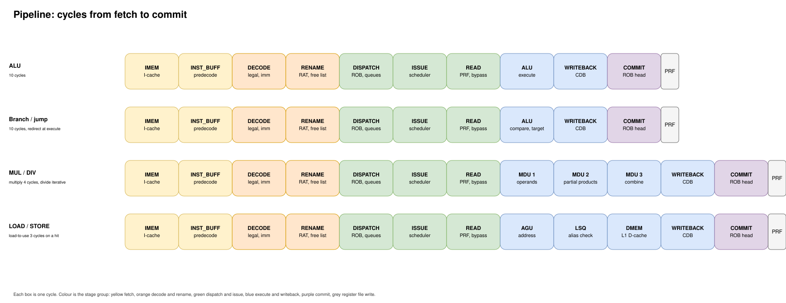

Core¶
ORCA is a 2-wide out-of-order RV32IMA core. Fetch, rename and retirement each handle two instructions a cycle, registers rename onto 64 physical registers, and a 32-entry reorder buffer (ROB) retires everything in order so software sees precise traps.


Pipeline Stages¶
# |
Stage |
Work |
|---|---|---|
0 |
L0 lookup, BTB, TAGE, RAS, FTQ |
|
1 |
I-cache response, L1 correction, instruction buffer |
|
2 |
RV32 decode, legality, fusion |
|
3 |
RAT lookup, physical register and ROB allocation |
|
4 |
queue routing and ROB writes, in the rename cycle |
|
5 |
scheduler; load and store queues are in the LSU |
|
6 |
ALUs, AGU, LSU, multiply, divide, CSR |
|
7 |
two results a cycle and wakeup |
|
8 |
in-order retirement, traps and flushes |
The stage numbers match the folders under rtl/cpu/. Six units sit behind three issue ports: ports 0 and 1 each feed an ALU, and port 2 takes the oldest ready op for the AGU, the multiply/divide unit (MDU) or the CSR unit. Two result buses carry results back to the register file, the ROB and the scheduler.
A warm-cache trace, with cycle 0 as the I-cache request:
Cycle |
Stage |
Work |
|---|---|---|
0 |
F1 |
fetch PC, L0, I-cache and BTB/TAGE/RAS request |
1 |
F2 |
I-cache read and tag compare |
2 |
F3 |
response, predecode, L1 verdict |
3 |
D |
decode |
4 |
R |
rename, ROB allocation, queue write |
5 |
I |
wakeup and select |
6 |
RR |
register read and forwarding |
7 |
EX |
ALU, result onto the bus |
8 |
C |
retirement |
Path |
Cycles |
|---|---|
Independent ALU op, fetch to retire |
9 |
Dependent ALU op |
one cycle after its producer |
Load, queue entry to data on the bus |
4 |
Multiply |
4 |
Taken loop branch the L0 has learned |
no bubbles |
Mispredict |
the front end restarts at execute, the back end flushes when the branch retires (recovery) |
Why rename and dispatch share a cycle. It saves a pipeline stage, so a mispredict costs one cycle less. The cost is a longer path in that cycle, so I compute queue readiness from registered occupancy and the cycle never waits on same-cycle issue.
Structure Sizes¶
Structure |
Size |
|---|---|
ROB |
32 entries |
Physical register file |
64 x 32 bits, six reads, two writes |
Scheduler |
12 entries, three issue ports |
Load queue, store queue |
12 entries each |
Instruction buffer |
4 entries |
Fetch target queue (FTQ) |
16 entries |
L0 BTB, BTB |
512 entries each |
TAGE |
512-entry base table, 4 x 1,024 tagged entries |
Return address stack (RAS) |
16 entries |
Payload array |
32 x 107 bits |
L1 caches |
32 KiB I, 16 KiB D, 2-way, 64-byte lines |
64 physical registers minus 32 committed mappings leaves 32 for in-flight writers, the same as the ROB size, and rename stalls when either runs out. Every size here came from measuring IPC against clock rate.
Core Boundary¶
cpu.sv is the core plus the L1 caches, with three interfaces on the core clock:
Line port. Cacheable fetch and data traffic goes to the boot ROM or DDR over one 128-bit port, four beats per 64-byte line (caches).
AXI4 master. Uncached loads and stores (the DMA region and device registers) leave as single-beat 32-bit transactions, and bus errors come back as precise faults.
Interrupt levels. Timer, software and external lines go to the CSR bank (traps).
The caches aren’t coherent with the host, so anything shared with it lives in the uncached DMA region (memory).